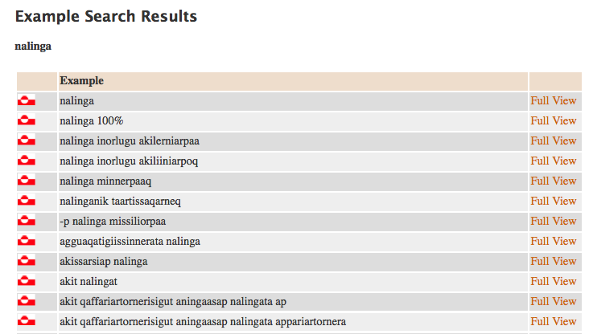
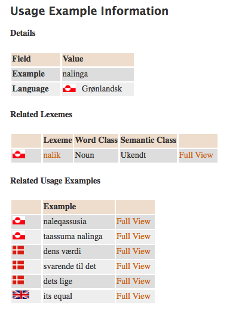
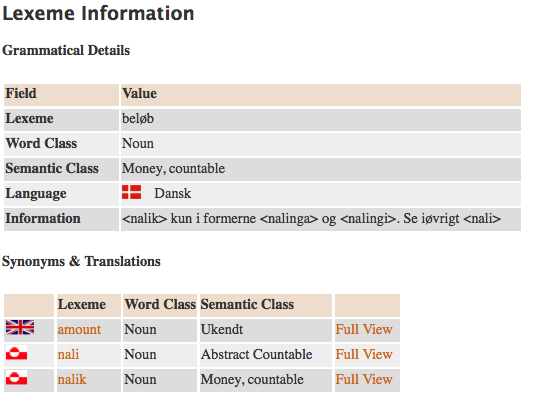
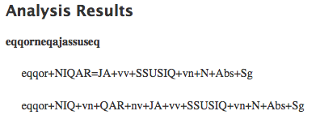
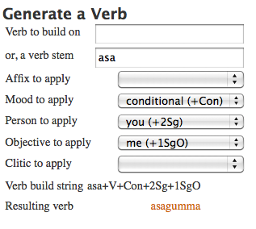
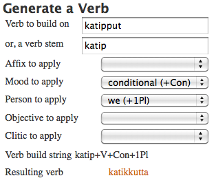

In this last chapter we will walk through a few central tools for you to use in your further studies and we will introduce the Danish/ Greenlandic corpus included on the DVD. In spite of the fact that the translations are into Danish because we unfortunately do not have English/ Greenlandic texts at hand the corpus still will be one of your most important allies on your way forward for quite some time.
You have by now used more than 100 hours on learning this language on most likely even quite a bit more. And you are most likely rather frustrated because you feel all too well that you still have a long, long way to go to reach fluency in a language that seems most unwilling to open itself to you.
I wouldn't even be surprised to learn that you are just about to give up as almost everyone else have done over the last 60 years since colonial status was lifted.
But before you do so consider the following:
When a Danish or Greenlandic child leaves compulsory schooling at the age of 15 it will have spent about 1.000 hours in the English L2 class-room and is still very far from fluent in English. L2 takes time, lots of it. Adults tend to forget how slow the acquisition process in reality was and how many resources it took. And Greenlandic L2 is by no means easier to get to than English is for a Dane.
If you worked your way through Greenlandic for foreigners and followed all instructions, thoroughly finished all exercises, and spent the prescribed time on the automata you have obtained a pretty safe feeling for the total Greenlandic sound system and have a fair grasp of all the processes that glue words and sentences together. Furthermore have you now learnt to use about one third of all grammatical endings and what is more the most frequent ones. I therefore insist that you now have a sufficient amount of language tools to enter into the real world of Greenlandic and start learning the language in much the same way as you learned other foreign languages you have learned this far: By listening and reading, by chewing on the language problems as they show up, by testing your own hypotheses on native speakers and/ or theoretically, but first and foremost by using your language for what language is supposed to be namely a way to interact with other people and the means to get access to spoken or written information that without the foreign language would have been outside your reach.
Your starting point for further studies is much better than it was for the learners before you. Apart from the fact that you this far have had the luxury of not having had to resort to primers and dictionaries in Danish because of the present DVD you have a few brand new tools and dictionaries in English awaiting for you to take some of the strain out of the tedious work with grammar books etc. in Danish. I do not claim that you can avoid material in Danish. I am on the other hand pretty sure that you will be forced to accept quite a bit of it in the years to come but I want you to open your mind to the fact that the few resources that are now available in English certainly will be a considerable relief in comparison to what your predecessors had to cope with. You will not be short of study material for a long time to come.
In the next chapters we will go over the corpus included in the DVD and the language tools you will find on www.oqaaserpassualeriffik.org as well and we will briefly mention a few other useful links. After that we will go over three typical problems and suggest a how-to for your disposal and inspiration.
Please, observe that the problems and solutions mentioned here are anything but exhaustive. On the contrary! You will run into hundreds of situations where you alone will be in the position to come up with a relevant strategy to handle the situation and to acquire the knowledge needed not to have the same problem next time you run into the same situation.
Is where you will find the two newest "normal" - t.i. printed - Greenlandic dictionaries, the Greenlandic-Danish Oqaatsit from 1997 and the Danish-Greenlandic Ordbogen from 2003. You can also download these two to your Android mobile from www.android.com and a version for iPhone is coming up in a foreseeable future (written in the fall of 2011).
Unfortunately, there exists no modern, printed English-Greenlandic-English dictionary. Schultz-Lorentzen's pioneer work from 1926 is still the only one of its kind and it is clearly outdated for modern purposes. The only option for you is accordingly via Danish if you need access to dictionaries locally be it on paper or on your mobile.
oqaaserpassualeriffik.org is the official web-site for the language technology project under Oqaasileriffik. The site is maintained in Greenlandic and English. It is free to use it.
If you click Linguistic tools you get a menu to help you solve a number of tasks:
Corpus Query is at the moment (fall 2011) empty because the compilation of a national corpus as known from almost all other countries still has not been initiated. But since Corpus Query is available already we hope to be able to provide users with access to example search in Greenlandic corpora immediately upon launching data.
Once we have access to texts the query tools will be able to provide information on single words and collocations (information on typical contexts found with a given word) as known from most modern dictionary projects.
Dictionary Search might well be your best friend for quite some time - at least until the ongoing Greenlandic-English-Greenlandic dictionary project produces some kind of output.
It is a major three-way lexical database between Danish, Greenlandic, and English named Katersat. Katersat is still (fall 2011) under development and still contains a substantial amount of errors but since it by far is the biggest lexical resource ever, and since it is the only modern contemporary dictionary with an English component, and since it updates running and fairly fast it is a source you cannot be without in spite of all faults and shortcomings.
Live Analysis is Oqaaserpassualeriffik's most advanced tool but also the most defective of all the tools. In addition it updates at the moment (fall 2011) at a rather slow pace because Oqaaserpassualeriffik in this phase needs to concentrate on updating the basic resources underlying the tools mentioned in the following paragraphs but Live Analysis will get priority in 2012 so there should be good hope for a better future for it.
It lets you write a full sentence online and gives you the sentence analyzed in depth morphologically and syntactically. This is a facility you no doubt will be very happy with in the future whenever you get stranded with a sentence you cannot make head or tail of - which no doubt will be a situation you too often will find yourself in!
Word Analysis is the system's "tractor". It breaks every word down into stems, derivational morphemes, endings, and clitics. In case of several possible analyses it simple lists all of them which occasionally produce some most unexpected understandings.
Word Generator will soon be your good friend I expect. It is a tool to generate actual word forms on the basis of a mixture of actual and theoretical (meta-) information you yourself enter. Should you for instance need to express the meaning 'It was because none of you saw me" and cannot produce the causative ending 'you-me' off the top of your head (it is Vb+gassiŋa) you will use the generator. Or maybe you remember that there was some kind of speciality with Vb-NNGIT together with causative without remembering exactly the exact content of the speciality you will use the generator.
Here is what you do:
Verb stem - write: taku
Affix to apply - click: -nngilaq (+NNGIT+vv)
Mood to apply - click: causative (+Cau)
Person to apply - click: you (+2Pl)
Objective to apply - click: me (+1SgO)
and the system has already given you the correct wordform takunnginnassinga.
The only person who for many years did a serious attempt to apply modern technology to the study of Greenlandic is Henrik Aagesen. His Qimawin and its second edition GroenOrd is an impressive pioneer work that covers almost all lexical knowledge about Greenlandic in a single CD with sophisticated and still easy-to-use query tools. I cannot strongly enough suggest you to buy it in spite of the fact that translations are into Danish.
Use it together with online Katersat. The two tools complement each other somehow since Henrik has included lots of older lexical stuff that is not in Katersat. In return Katersat updates running including the newest decisions from the Greenlandic Language Board.
Once you get used to the way of working with the corpus and invent your strategies to overcome the fact that translations only are in Danish the corpus is most likely to be your primary work field the next year or so.
It is based on bilingual articles from Atuagagdliutit and Sermitsiaq. The collection comprises about 35.000 running Greenlandic words corresponding to about 60.000 Danish words. Furthermore will you find all the Greenlandic words analyzed and tagged into stems + derivational morphemes + endings + clitics together with a tag that gives us information about what syntactic function the word in question holds in the sentence it was taken from.
This is the way it works: You can search for a word, a stem, a derivational morpheme, an ending, a clitic, or any grammatical tag. Accordingly will you get all verbs in the causative mood if you search for 'Cau' and you will get all transitive verbs having 'me' as object if you search for '1SgO'. If you would like to restrict your query to give you only verbs with object 'me' in the causative mood you will search for 'Cau+1SgO'. With every word that meets your search criteria the program will give you (i) the word analyzed into bits and pieces (ii) the full Greenlandic sentence from which the given word was taken, and finally (iii) the same sentence in the Newspaper's own translation.
Once you have extracted as much learning as possible out of the first hit (by reading and understanding and repeating not only the single word but also as much as you can handle of the context) you click 'Next' and get the next example including context and translation of context. Etc. etc. This procedure can go on almost infinitely and single hits will sometimes require lots of study on your behalf but I guarantee you that the effort will not be in vain. It is simply good learning!
You will have hundreds and hundreds of good questions to ask and problems to solve. The examples of queries hereunder are nothing but inspiration to possible ways to use the corpus and the other tools. They are under no circumstances comprehensive and never will be. It is you alone to decide what is most efficient for you at any point of your acquisition process and you alone to decide how to manoeuvre in the material at hand for you.
Let us repeat the piece of advice you know already from LearnGreenlandic.com: Make sure to netword! I hope for your own sake that you had your personal learning network well established already while you worked through the eight chapters before this one. If you had not it is high time for you to come out. The phase you are entering now without a structured primer to hang on to will under all circumstances be tough.
You simply need support and there are many well motivated students out there waiting for the support you can offer them. Get you network established the earlier the better. If you happen to not have the right king of people to network with inside your personal network you must go to LearnGreenlandic.com/forum and add a call for kindred spirits. Make sure that you exploit this possibility.
Here is a typiscal situation: You are about to pay with your credit card in the supermarket and hear the cashier ask nalinganut - and after a few seconds she will continue in Danish asking På beløbet?
The normal but inefficient - from the point of view of L2 learning - reaction is to smile back and say Aap without really getting deep into the situation. That is a way to handle the communication by means of context or maybe because of her Danish translation rather than by linguistic observations. You might as a maximum have learned that nalinganut means 'the exact amount' as apposed to 'do you want cash withdrawal'.
Is this really the optimal profit from that situation? Obviously, it is not since you did not take any learning out of the supermarket that is useable outside the very specific context 'the exact amount'. Could it be so that the situation could have been exploited to open to brand new lexical material like 'large amounts of money' or even complex thoughts like 'value added' or 'inflation'? There actually is such potential.
Or 'What is it really like with nalinga as opposed to nalaa'. Both stems have the same translation in the dictionaries. Is nalinga related to nalitsinni ('in our time/ nowadays') and naleqartitaq ('ethic or economic value') or not? And how come she said nalinganut instead of nalaanut??
The good language learner will keep nalinganut in his head and go home and check it.
A lookup in DAKA does not give nalinganut but almost:
nalinga t værdien, dens værdi, svarende til det
Next step will be to check Katersat. Once again you find no nalinganut but you get dozens of hits on nalinga. Here we bring the first dozen of hits from the query as it works right now (fall 2011):

By clicking a little in the examples you soon get the overall picture that nalinga rather unequivocally means 'its monetary value' and also that this is the stem found in much economic terminology as 'inflation' and 'par'.
One could stop here but one could also go on to reach a deeper understanding of the word. Here is a click on 'Full View' next to nalinga (fall 2011):

It appears to be the stem nalik that lies under the wordform nalinganut. If we now click Full View next to nalik we learn that the stem is unusable without personal endings and that its semantics are specific economic and that it corresponds to English amount and Danish beløb. Here is a click on beløb:

You have already made quite some progress in your understanding of nalinganut so you could consider to call it a day but you may also go on as long as you bother to. You could for instance click on nali to learn what that can give you.
After a period of surfing an overall picture of the kind of casting that is in force between the two "identical" stems. It is actually rather complicated1.
You may also want to go on from here by using corpus to get examples on actual use and context. Try for instance to make a search for <nalik>2. Here is the first hit:
Your query:
"<nalinginut>" "nalik" N Trm Pl 3PlPoss @ADVL>
found in the sentence:
Siunnersuummi attartortunut ilaqutariinnut ataasiakkaanut illuliani affarleriinnilu najugaqartunut illut tunineqassatillugit akikillisaasiisoqartassanngilaq, illut niuerutigineqarnerminni nalinginut tunineqartalissammata, akikillisaasiisarnermut aaqqissuussinermut nutaamut ineqarnermut pisortaqarfimmiit oqaaseqaatini allassimavoq. which corresponds to: Der gives i forslaget ikke nedlag i salgsprisen for lejere, der bor i enfamilie- og dobbelthuse, der altid sælges til markedsværdien, står det i den nye rabatordnings bemærkninger fra boligdirektoratet.
As you see nalik here is plural and in the allative case (Trm) and has a 3.Pl possessor (3PlPoss). The word accordingly means 'their' nalik-s. @ADVL> gives us the piece of information that the word nalinginut is adverbial to the following verb.
By reading the word into the context we learn - most likely after several visits to DAKA and Katersat - that this instance of nalik is one element in the nominal phrase niuerutigineqarnerminni nalingi (in-their-being-traded their-nalik) that is one way to express 'market value'.
In this way we get new knowledge - the specific information on nalik - and revise at the same time already learned stuff and touch upon lexical items and problems we might not yet have the means to exploit in full. But that will come with time.
Does it seem a little overwhelming? Well, it actually is but it is at the same time really good learning so make sure to give it what it takes to do it!
Here is another typical situation you find yourself in whenever you meet a new derivational morpheme. What does it mean? What does it do? Which are the limitations in its use? Etc.
When you come upon the word eqqorneqajassuseq you might try to look it up in DAKA without result so you most likely try your luck in Katersat.
Here, too, a search for eqqorneqajassuseq returns no hits so you try some wildcard searches for shorter forms: eqqorneqaja returns nothing but eqqorneqa gives you the word eqqorneqaat meaning 'a hit' and - what is more important in the present situation - gives you the stem eqqor followed by passive Vb+NIQAR. That is our starting point.
What we need to know is what goes on after NIQAR so we try to look up the word with 'Word Analyser'.
Here is the resultat of eqqorneqajassuseq:

The word in question has two different analyses but it also says that the derivational morpheme Vb-JA which means 'inclined to/ apt to Vb'. You can extract meaning if you lookup the morpheme in Oqaatsit in the list of morphemes after each letter.
Now you need to understand and use Vb-JA. So you check whether corpus has anything in store for you. Here is the first hit on <JA>:
Your query:
"<eqqorneqajassuseq>" "eqqor" NIQAR = JA vv SSUSIQ vn N Abs Sg @<SUBJ
found in the sentence:
Tamatumunnga atatillugu eqqorneqajassuseq silallu allanngoriartorneranut naleqqussarnissaq naliliiffigineqassapput, Kalaallit Nunaanni allamut naleqqussarnissaq pisariaqartoq pillugu pilersaarusiornissaq atorneqarluarsinnaasoq isumagineqassalluni.
which corresponds to:
Samtidig skal det vurdere sårbarhed og tilpasning til klimaændringer, som vil være direkte anvendelige i planlægningen af den nødvendige omstillingsproces i Grønland.
Your query:
"<tunniutiinnajallutillu>" "tunniup" INNAR = JA vv V Inf 4Pl LU @i-ADVL> found in the sentence: Ilulissani aalisartut ukiuni 100-ni misilittagaqartut aalajaallutik tunniutiinnajallutillu suliuartuunerata aalisarnermi tunisassiornermilu ataavartumik suliffissaqartitsiuarnerat pissusissamisuuginnarpoq, taamaammallu suliffissuaqarnikkut ingerlallualeruttornermi sulisussanik amigaateqarnerit tusarsaalersarput, which corresponds to: Fiskerne i Ilulissat, med deres erfaringer igennem 100 år er utrættelige og stabile fiskere, der skaber arbejde på land og til søs, og det er kun naturligt, at der kommer udmeldinger om mangel på arbejdskraft i højsæsonen.and so on. After some queries for <JA> - and the byways and detours you will need to understand the contexts Vb-JA was part of - you will gradually get the feeling for the morpheme you were looking for plus the fact that you will have added another layer of knowledge to your learning.
The conditional is the only mood we have not touched upon in the preceding nine lessons so you will soon run into problems of type "How do I say 'If you love me' or 'After we marry'".
One first approach will be to test the forms in Word Generator. First we look at 'If you love me'

It worked fine and we got the correct wordform asagumma.
'After we marry' is a bit more complicated since the word generator only can handle a limited number of morphemes. It cannot handle the morpheme we need right now namely Vb-RIIR. We need to take one step backwards and accept only to get the right ending that is 'When we marry':

We got the right ending namely Vb+gutta. Now it should be simple to produce the correct wordform {katip-RIIR+gutta} ⇒ katereerutta.
After you have build a number of words it is time to use the corpus to find as many examples of the conditional to understand and repeat as you like. Here is the first query for <Con>:
Your query:
"<namminiilivippat>" "nammineer" LIR = VIP vv V Con 3Sg @CON
found in the sentence:
Aningaasat taakku Kalaallit Nunaat namminiilivippat annaaneqassapput. which corresponds to: Penge, som Grønland vil miste, hvis det bliver selvstændigt.
Your query:
"<pisartagarineqarunnaarpata>" "pisar" TAR vv TAQ vn GE nv NIQAR = GUNNAIR vv V Con 3Pl @CON found in the sentence: Taakku pisartagarineqarunnaarpata innuttaasut nunani ineriartortitani inuuniarnermi atugassarititaasut qaffaseqataannik inuuneqalernissartik naatsorsuutigisariaqassavaat, lektor Lise Lyck, Copenhagen Business Schoolimeersoq, isumaqarpoq. which corresponds to: Uden dem vil befolkningen skulle indstille sig på at leve på ulandsniveau, mener lektor Lise Lyck fra Copenhagen Business School.etc. etc. for a very long time. But after that you definitely will learn Greenlandic.
Enjoy yourself!!
Per Langgård
1nalik and nali are nothing but two varieties of the same stem with identical semantics namely 'its equivalent' which again can be in time, money, space, etc.. In modern language the archaic almost vahished up-declension has specialized to cover monetary semantics leaving the modern p-declensed nalə to handle equivalence in time and space.
2Angled brackets are not part of the query. They must be left out in the query.